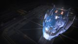

Макс. прыжок с улучшениями
~47 св. лет
Частичная русская локализация. Вернуться в Companion
Лёгкий и недорогой Adder вмещает больше оборудования, чем Hauler : топливозаборник, сканер, блок авторемонта (AFMU), небольшой ангар для планетохода и грузовой отсек. При этом корпус массой 35 тонн позволяет достичь достойной дальности прыжка около 47 св. лет после инженерных улучшений. Он уступает специализированным исследователям по дальности и вместимости модулей, но универсальность и низкая цена делают его разумным выбором для пилотов, которым нужен один недорогой корабль для исследований и торговли.

Оценка пригодности корабля от 1 до 100 учитывает полностью улучшенную сборку и сравнивает её с другими кораблями в этой роли. Подробнее: как оцениваются корабли.
Adder — маленький универсальный корабль от Zorgon Peterson: дешёвый, лёгкий, пригодный для перевозок, лёгких боёв, добычи и исследований. Благодаря малой массе корпуса (35 т) он прыгает примерно на 47 св. лет после инженерных улучшений. В семь небольших отсеков помещаются топливозаборник, сканер, блок авторемонта (AFMU), ангар для планетохода и даже немного груза. Оборудования можно взять больше, чем на сверхлёгкий Hauler, а стоит он лишь немногим дороже.
Это не специализированный исследователь: по дальности и вместимости он уступает кораблям Diamondback, а корпус у него лёгкий и небыстрый. Зато тот же недорогой корабль подойдёт для перевозок и заданий на доставку. Если нужен доступный универсал для вылазок в дальний космос, Adder — разумный выбор со своим характером.
Первые экспедиции с ограниченным бюджетом, совмещение исследований и перевозок, недорогие вылазки за экзобиологией и полёты в дальний космос между другими делами.
Четыре причины выбрать Adder как недорогого исследователя:
Двигатель третьего класса (FSD) и небольшие отсеки ограничивают дальность и число модулей. Места для резервов нет, скорость и прочность щита невысокие. Diamondback Scout (низкий нагрев и четыре внешних крепления) и Diamondback Explorer лучше подходят для чистых исследований и стоят ненамного дороже. Сильная сторона Adder — универсальность и низкая цена, а не предельная дальность.
Оценку поднимают низкая цена, отсутствие требования к рангу и универсальность. Дальность около 47 св. лет и тесные отсеки без места для резервных модулей оставляют корабль в середине списка.
60/100 — итог по критериям, важным для исследований. У каждого критерия есть вес (его доля из 100). Баллы по нему зависят от того, как корабль показал себя на фоне остальных. Сумма баллов даёт итоговую оценку.
| Критерий | Баллы | Почему столько |
|---|---|---|
| Дальность прыжка с улучшениями | 19/35 | Корпус массой 35 т, FSD третьего класса и ускоритель Стражей 3H дают около 47 св. лет после улучшений. Это прилично для такой цены, но меньше, чем у Diamondback Explorer (около 68), Asp (около 62) и одноклассника Hauler (около 50). |
| Нагрев | 9/15 | Энергетическая установка третьего класса с «Низкими выбросами» 5-й ступени и «Рассеиванием тепла» позволяет заправляться глубоко в короне звезды. Но по нагреву корабль уступает Diamondback Scout и Dolphin: достаточный результат, не преимущество. |
| Запас топлива и автономность | 7/10 | Бак третьего класса (32 т по данным оригинала) и топливозаборник третьего класса дают разумный баланс массы и частоты заправок. Для малого корпуса автономность приемлемая, но небольшой запас вынуждает чаще заправляться между звёздами. |
| Кабина и обзор | 6/10 | Лобовое остекление разделено, обзор вперёд приемлемый, но ничем не выделяется. Панорамы как у Asp Explorer нет, как и заметной слепой зоны. |
| Отсеки | 10/20 | Семь небольших отсеков (3·3·2·2·1·1·1) и отсутствие военных отсеков позволяют взять топливозаборник, сканер, блок авторемонта, ангар для планетохода второго размера и грузовой стеллаж. Для резервов места нет, а специализированные исследователи вмещают больше. |
| Удобство и цена | 9/10 | Корпус стоит около 41 тыс. кредитов, ранг и разрешение не нужны, выкуп почти ничего не стоит, а полностью улучшенная сборка обходится примерно в 3,5 млн кредитов. В кабине тесно, зато корабль дёшев и легко переоснащается. |
| Взвешенный итог | 60/100 | Эта сумма совпадает с общей оценкой корабля в этой роли. |
Вес критерия отражает приоритеты авторов гайда, а не формулу игры. Длина полосы показывает, какую долю от максимума корабль набрал по этому критерию. Подробнее: как оцениваются корабли.
Таблицы сравнивают корабли именно для исследованийи разделяют их по размеру посадочной площадки. Столбец «Вместимость» показывает суммарную вместимость дополнительных отсеков для сканеров, авторемонта и топлива. Оценка пригодности выставляется по шкале от 1 до 100.
| Корабль | Класс | «Вместимость» | Плюсы и минусы | Оценка |
|---|---|---|---|---|
| Diamondback Explorer | Малая | ~60 т | Выше оценка; нагрев; удобство и ценаОтсеки | 88 |
| Dolphin | Малая | ~88 т | Выше оценка; нагрев; удобство и ценаДальность прыжка | 80 |
| Diamondback Scout | Малая | ~32 т | Выше оценка; нагрев; удобство и ценаОтсеки | 74 |
| Imperial Courier | Малая | ~34 т | Выше оценка; дальность прыжка; обзорОтсеки | 73 |
| Cobra Mk V | Малая | ~110 т | Выше оценка; отсеки; удобство и ценаДальность прыжка | 72 |
| Cobra Mk III | Малая | ~64 т | Выше оценка; обзор; отсекиНагрев | 71 |
| Hauler | Малая | ~26 т | Выше оценка; удобство и цена; дальность прыжкаОтсеки | 62 |
| Adder этот | Малая | ~30 т | — отправная точка для сравнения | 60 |
| Kestrel Mk II | Малая | ~70 т | Автономность; обзорНиже оценка; удобство и цена | 50 |
Из девяти оценённых кораблей для малой площадки лидирует Diamondback Explorer (88). Все соперники в этой таблице садятся на такие же площадки; с них стоит начинать сравнение перед покупкой.
| Корабль | Класс | «Вместимость» | Плюсы и минусы | Оценка |
|---|---|---|---|---|
| Anaconda | Большая | ~470 т | Выше оценка; автономность; отсекиОбзор | 94 |
| Caspian Explorer | Большая | ~434 т | Выше оценка; автономность; обзорУдобство и цена | 94 |
| Imperial Clipper | Большая | ~250 т | Выше оценка; отсеки; удобство и ценаДальность прыжка | 63 |
| Orca | Большая | ~194 т | Выше оценка; обзор; автономностьДальность прыжка | 63 |
| Beluga Liner | Большая | ~370 т | Отсеки; автономностьНиже оценка; дальность прыжка | 58 |
Среди пяти оценённых кораблей для большой площадки лидирует Anaconda (94). Эти корабли превосходят Adder по характеристикам, но требуют более крупных площадок и большего бюджета.
| Корабль | Класс | «Вместимость» | Плюсы и минусы | Оценка |
|---|---|---|---|---|
| Mandalay | Средняя | ~154 т | Выше оценка; дальность прыжка; нагревОтсеки | 96 |
| Krait Phantom | Средняя | ~190 т | Выше оценка; отсеки; нагревУдобство и цена | 93 |
| Asp Explorer | Средняя | ~130 т | Выше оценка; обзор; отсекиДальность прыжка | 86 |
| Krait Mk II | Средняя | ~230 т | Выше оценка; отсеки; удобство и ценаНагрев | 80 |
| Python | Средняя | ~294 т | Выше оценка; автономность; отсекиДальность прыжка | 75 |
| Asp Scout | Средняя | ~74 т | Выше оценка; удобство и цена; нагревДальность прыжка | 70 |
| Type-6 Transporter | Средняя | ~114 т | Выше оценка; удобство и цена; отсекиДальность прыжка | 68 |
| Corsair | Средняя | ~318 т | Удобство и цена; отсекиНиже оценка; дальность прыжка | 58 |
| Type-11 Prospector | Средняя | ~288 т | Автономность; отсекиНиже оценка; дальность прыжка | 55 |
Среди девяти оценённых кораблей для средней площадки лидирует Mandalay (96). Эти варианты относятся к другому классу посадочных площадок.
Корпус Adder стоит около 41 тыс. кредитов, ранг не нужен, а выкуп почти ничего не стоит. Полная исследовательская сборка обходится примерно в 3,5 млн кредитов — немного для универсального корабля, способного ходить в дальний космос.
Это выбор в пользу цены и универсальности. Для чистых исследований лучше доплатить за Diamondback. Adder имеет смысл, если нужен один недорогой корпус для исследований, перевозок и заданий.
За примерно 3,5 млн кредитов можно исследовать дальний космос, возить груз и выполнять задания на одном корабле.
Недорогая универсальная исследовательская сборка с небольшим грузовым отсеком. Начальная требует только покупки, сборка класса A подходит для экспедиций, а инженерная даёт максимальную дальность для этого корпуса.
| Отсек | Начальная · только покупка | Класс A · без улучшений | С инженерными улучшениями | Примечания |
|---|---|---|---|---|
| Внешние крепления | ||||
| Крепление 1 | 0I Теплоотводная катапульта | 0I Теплоотводная катапульта | G1 Дополнительный боезапас (без экспериментального эффекта) | Необязательно. Дополнительный боезапас даёт больше теплоотводов. Они снимают нагрев при скрытном ходе и помогают сбросить температуру. |
| Основные модули | ||||
| Обшивка | Лёгкий сплав | Лёгкий сплав | Облегчение 5-й ступени (без экспериментального эффекта) | |
| Энергетическая установка | 3E Энергетическая установка | 3D Энергетическая установка | G5 Низкие выбросы + Рассеивание тепла | Класс D снижает массу. «Низкие выбросы» уменьшают нагрев при заправке глубоко в короне звезды. |
| Маневровые двигатели | 3E Маневровые двигатели | 3D Маневровые двигатели | G5 Чистая настройка двигателей + Снижение массы | Маневровых двигателей класса D хватает для корпуса массой 35 т. « Чистая настройка двигателей » снижает нагрев, а «Снижение массы» помогает увеличить дальность. |
| Рамочно-сместительный двигатель (FSD) | 3E Рамочно-сместительный двигатель (FSD) | 3A Рамочно-сместительный двигатель (FSD) | G5 Увеличенная дальность + Управление массой | Сначала поставь класс A и улучши модуль по чертежу «Увеличенная дальность» с эффектом «Управление массой». Дальность — основная цель сборки. |
| Система жизнеобеспечения | 1E Система жизнеобеспечения | 1D Система жизнеобеспечения | G5 Облегчение (без экспериментального эффекта) | Класс D и «Облегчение» позволяют сэкономить массу. У системы жизнеобеспечения нет экспериментального эффекта. |
| Распределитель энергии | 2E Распределитель энергии | 2D Распределитель энергии | G3 Упор на двигатели (без экспериментального эффекта) | Без оружия класса D достаточно. Улучшение «Упор на двигатели» помогает быстрее набирать заряд для форсажа при заходах на заправку. |
| Сенсоры | 3E Сенсоры | 3D Сенсоры | G5 Облегчение (без экспериментального эффекта) | Поставь класс D и облегчи модуль. Большая дальность сенсоров исследователю не нужна. |
| Топливный бак | 3C Топливный бак | 3C Топливный бак | (нет чертежа улучшения) | Бак третьего класса (32 т по данным оригинала) даёт баланс массы и частоты заправок. Вместимость не поддаётся инженерному улучшению. |
| Дополнительные отсеки | ||||
| Размер 3 | 3E Топливозаборник | 3A Топливозаборник | G5 Защищённый (без экспериментального эффекта) | Необязательно. Улучшение «Защищённый» повышает прочность топливозаборника и не меняет скорость заправки у звёзд. |
| Размер 3 | 3E Грузовой стеллаж | 3H Ускоритель FSD Стражей | (нет чертежа улучшения) | Ускоритель FSD Стражей даёт фиксированную прибавку к дальности сверх улучшений двигателя. Для технологии Стражей инженерного чертежа нет. |
| Размер 2 | — | 2G Ангар для планетохода | (нет чертежа улучшения) | Облегчённый ангар 2G нужен для сбора материалов на поверхности и экзобиологии. Инженерных улучшений для ангара нет. |
| Размер 2 | — | 2E блок авторемонта (AFMU) | G5 Защищённый (без экспериментального эффекта) | Необязательно. Улучшение «Защищённый» повышает прочность блока авторемонта (AFMU). Модуль ремонтирует оборудование корабля. |
| Размер 1 | — | 1I Подробный сканер поверхности | G5 Увеличенный радиус сканирования зондов (без экспериментального эффекта) | Необязательно. Улучшение увеличивает площадь, которую покрывает каждый зонд при составлении карты планеты. |
| Размер 1 | — | 1C Генератор двухконтурного щита | G5 Улучшенная энергоэффективность (без экспериментального эффекта) | «Улучшенная энергоэффективность» уменьшает вес и расход энергии щита в дальнем полёте. |
| Размер 1 | — | 1E Грузовой стеллаж | (нет чертежа улучшения) | Необязательно. Дополнительное место для груза пригодится при перевозках. Грузовые стеллажи нельзя улучшить у инженеров. |
| Планировщики и экспорт | ||||
| Открыть в Coriolis | открыть | открыть | открыть | Открывает сборку на coriolis.io. |
| Открыть в EDSY | открыть | открыть | открыть | Открывает сборку на edsy.org. |
| Скопировать SLEF | Копирует выбранную сборку в формате экспорта оснащения корабля (SLEF). | |||
Семь отсеков Adder вмещают топливозаборник, ускоритель Стражей, сканер, небольшой ангар для планетохода и блок авторемонта . Ещё один-два отсека остаются под груз. В этом и смысл: недорогой корабль исследует или возит груз в зависимости от задачи.
Что в первую очередь поставить на недорогой универсальный исследователь:
Полная сборка класса A с лёгкими инженерными улучшениями стоит всего несколько миллионов. Тот же Adder можно переоснастить для перевозок.
Инженерные улучшения для недорогого универсального исследователя. Felicity Farseer улучшает двигатель FSDпо чертежу «Увеличенная дальность». Professor Palin или Mel Brandon улучшают маневровые двигатели до 5-й ступени. Закрепляй чертежи для удалённого применения с 1-й по 5-ю ступень.
| Модуль | Чертёж | Экспериментальный эффект | Инженер |
|---|---|---|---|
| Рамочно-сместительный двигатель (FSD) (3) | Увеличенная дальность (G5) | Управление массой | Felicity Farseer |
| Маневровые двигатели (3) | Чистая настройка двигателей (G5) | Снижение массы | Professor Palin / Mel Brandon |
| Энергетическая установка (3) | Низкие выбросы (G5) | Рассеивание тепла | Hera Tani |
| Система жизнеобеспечения (1) | Облегчение (G5) | — | Etienne Dorn |
| Сенсоры (3) | Облегчение (G5) | — | Bill Turner / Juri Ishmaak |
| Распределитель энергии (2) | Упор на двигатели (G3) | — | The Dweller |
| Обшивка | Облегчение (ступень 5) | — | Selene Jean |
Мало: модули небольшие, а чертежи типичны для исследователя. Это один из самых дешёвых наборов улучшений. Если материалы уже есть, затраты невелики. При необходимости сверь точное количество по каждому чертежу.
Ориентировочные показатели для трёх сборок. Точный результат зависит от оснащения:
| Показатель | Начальная | Класс A | С инженерными улучшениями |
|---|---|---|---|
| Макс. прыжок, св. лет | ~28 | ~38 | ~47 |
| Универсальность | высокая | высокая | высокая |
| Место для модулей | мало | мало | мало |
| Скорость с форсажем | 321 м/с | 321 м/с | ~350 м/с |
| Выгода за свою цену | высокая | высокая | высокая |
После улучшений Adder прыгает примерно на 47 св. лет и по-прежнему может возить груз или выполнять задания. Это маленький, недорогой и универсальный исследователь. Штатная обшивка из лёгкого сплава, снижение массы двухконтурного щита и отказ от усилителя щита позволяют сэкономить каждый килограмм. По дальности и вместимости корабль уступает специализированным исследователям; его преимущества — универсальность и цена.
Начни с ближайших систем или первых вылазок в сторону центра галактики. От домашней базы можно недорого и без сложной подготовки совместить короткую экспедицию с перевозкой груза.
Adder — недорогой универсал для дальнего космоса. Лёгкий корпус даёт приличную дальность, отсеки вмещают оборудование и немного груза, а между экспедициями можно возить груз или участвовать в лёгких боях. Это не специализированный исследователь, зато один из самых дешёвых способов получить гибкий корабль для полётов в дальний космос.
Цифры в статье сверены авторами оригинала с источниками ниже.